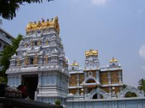

|
TIRUPATI GODDESS SRI PADMAVATHI TEMPLE, TIRUCHANUR Tiruchanoor, also known as Alamel Mangapuram, is situated about 5 km from Tirupati. The presiding deity in the temple is Goddess Sri Alamel Mangai popularly known as Sri Padmavathi Devi. It is said that a visit to Tirumala is fruitful only after visiting the Sri Padmavathi Devi temple.
SRI KAPILESWARA SWAMY TEMPLE Sri Kapileswaraswami Temple is the only temple dedicated to Lord Siva run by TTD in Tirupati. It is a cave temple, situated about 3 km to the north of Tirupati, at the foot of the Tirumala Hills. The sacred waterfall at the shrine called as Kapila Teertham is also called as Alwar Teertham by the Vishnavites from Tamilnadu. The annual Brahmotsavams and other festivals like Vinayaka Chaturthi, Mahasivaratri, Skanda Shasti and Annabhishekam are performed here with great pomp and splendour.
LORD GOVINDARAJA SWAMY TEMPLE Sri Govindarajaswami Temple with very tallest gopuram is situated in the heart of Tirupati. Noted vaishnavite Saint Ramanujacharya consecrated the temple in 1130 AD. But very interestingly, at the shrine the celestial bath (Abishekam) is not conducted to the presiding diety, perhaps, first of its kind in India. Because the deity of lord Sri Govingdaraja that is in lying posture is made of Clay.
ISKCON The International society for Krishna consciousness was formed in 1968 by His Divine Grace A.C. Bhaktivedanta Swami Prabhupada, on the order of his spiritual master to succession going back directly 515 years to the time when Lord Caitanya appeared in India , and from there, still further back-5000years-to the time when Lord Krishna first spoke the Bhagavad-Gita to his Disciple Arjuna. Krishna consciousness is experienced as a process of self-purification. It's means and ends are an open secret, and there is no financial charge for learning Krishna consciousness or receiving initiation into the chanting of Hare Krishna. The gist of devotional service to Krishna is that one takes whatever capacity or talent he or she has and dovetails it with the interests of the Supreme Enjoyer, the Lord, Sri Krishna. The writer writes articles for Krishna , and we publish periodicals in this way. The businessman does business in order to establish many temples across the country. The householders raise children in the science of God, and husband and wife live in mutual co-operation for spiritual progress. These activities are done under the sanction of the expert Spiritual Master, and in line with the Scriptures. Devotional service in Krishna consciousness means regular chanting in the temple, hearing talks about the pastimes of Krishna from Srimad Bhagavatam, and taking foodstuffs prepared for and offered to the Supreme Personality of Godhead. |